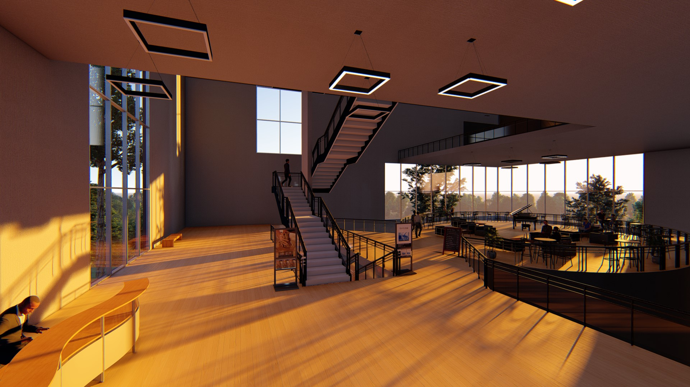
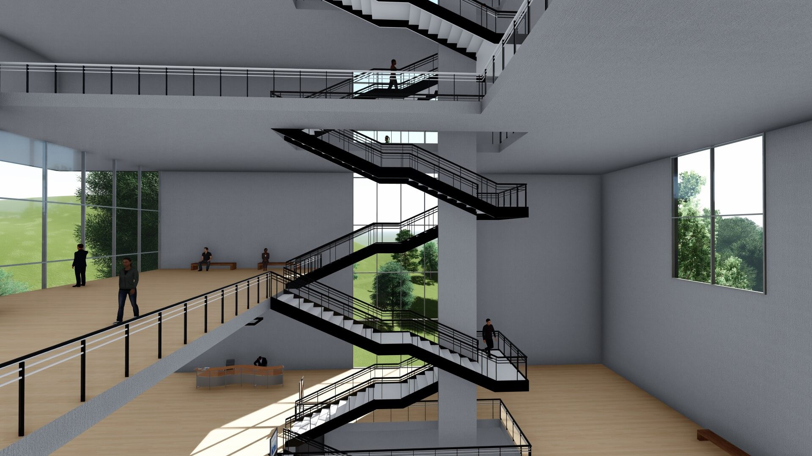
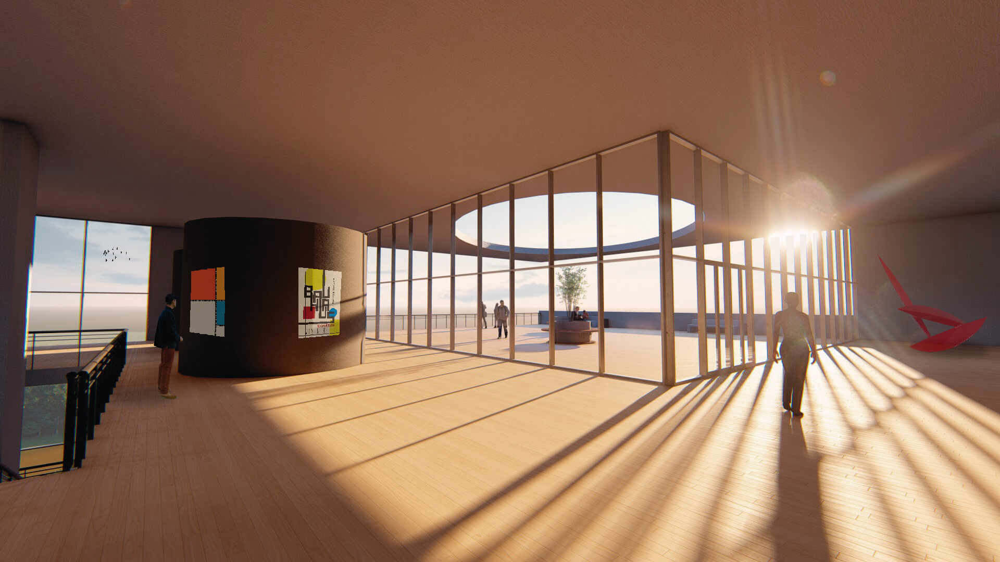
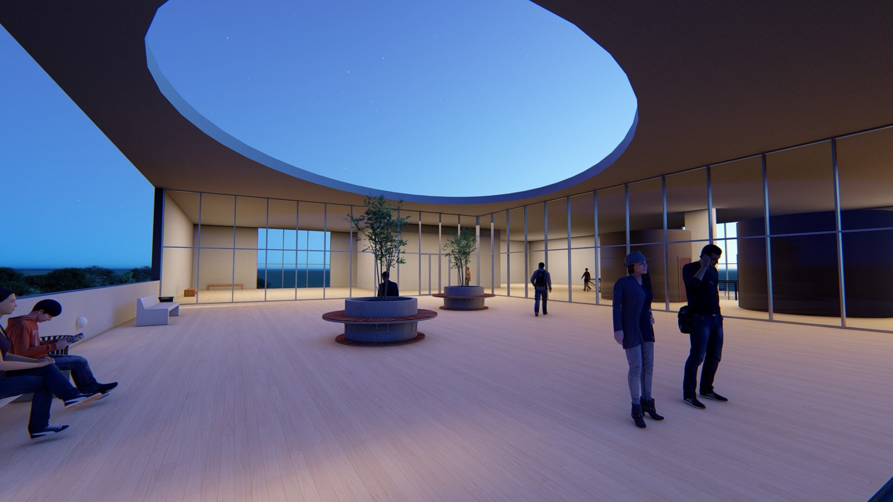
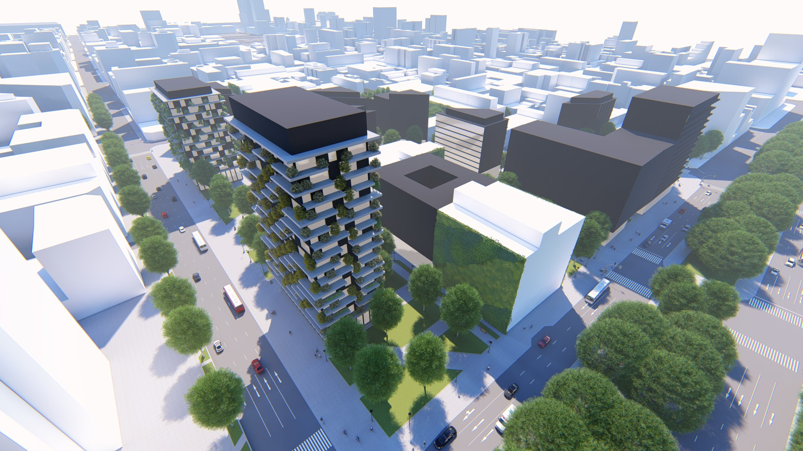
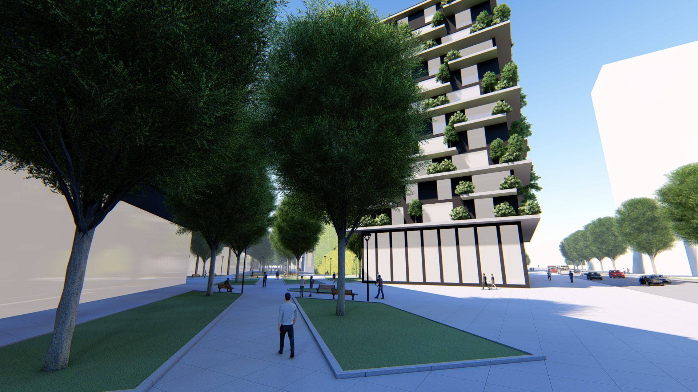
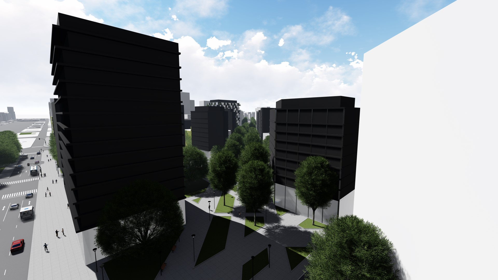
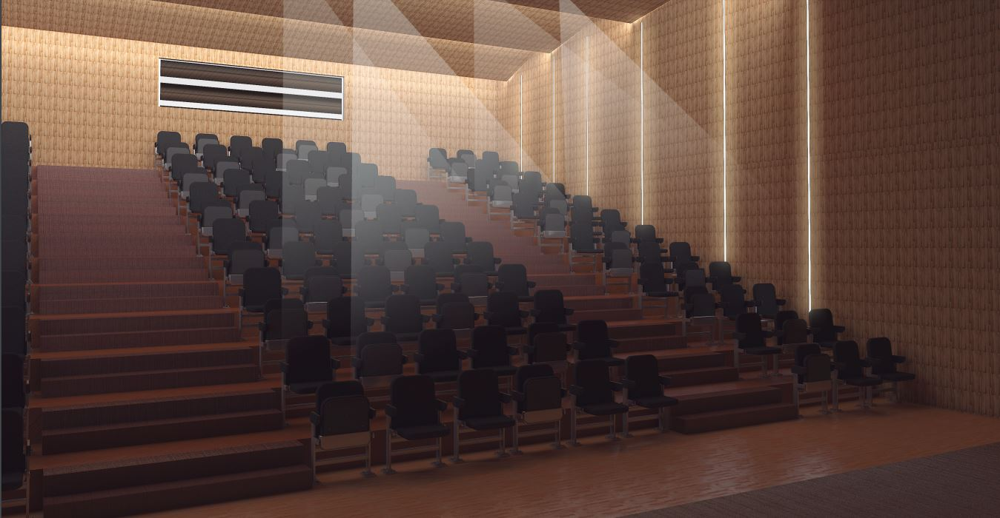
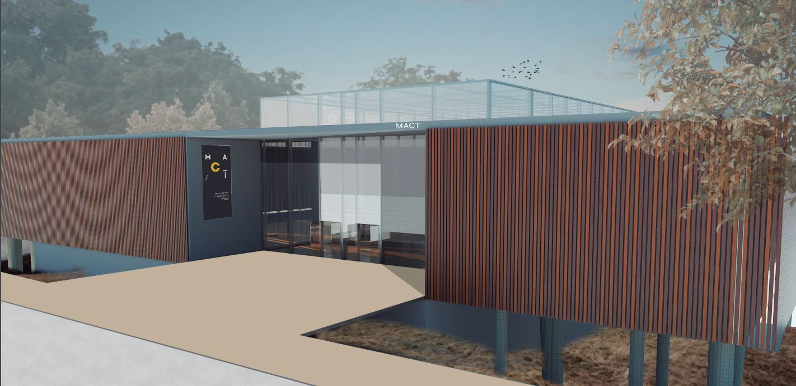
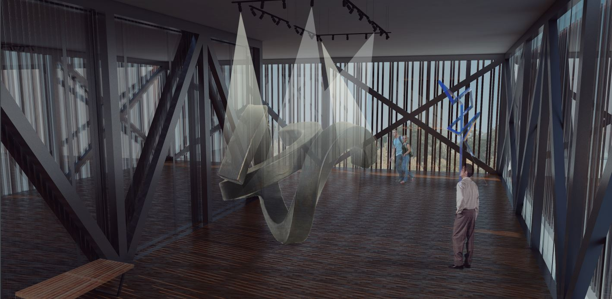

PROYECTOS RECIENTES
Nuestras Creaciones




Art Museum
Un museo como un espacio de encuentro y observación. Esta fue la premisa del proyecto arquitectónico del museo de arte contemporáneo. El mismo fue pensado como un lugar de permanencia y convivencia con el entorno inmediato.



Diagonal Sur, CABA
El área central de Buenos Aires es un sector de gran valor por donde se lo analice, dsede situarce la sede del Poder Ejecutivo de la Nación, edificios de administración, como así también monumentos, museos y centros de interés.




Museo Tandil
Frente a la natural magnificencia de este privilegiado pedazo de tierra que es Tandil y siguiendo la idea de José Enrique Rodó que la excitación y el movimiento de la vida no es capaz de crear una aptitud que no tenga su principio en la espontaneidad de la naturaleza, se crea este museo.